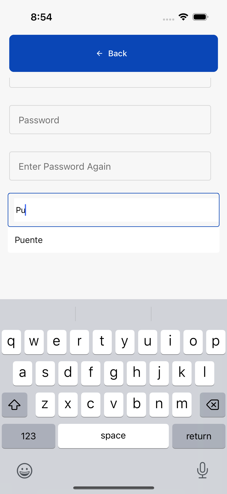
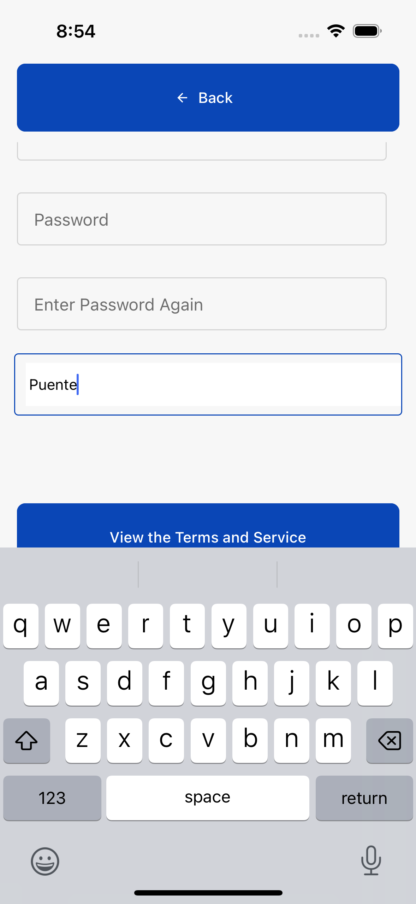
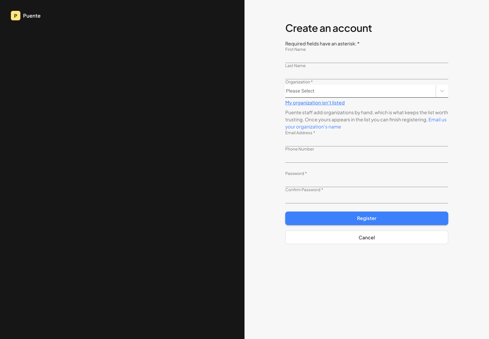

1The ideaLa idea
An organization is the name on the folder that holds a group's survey records and their team's accounts. Your organization decides which records you can see.
Una organización es el nombre en la carpeta que guarda las encuestas de un grupo y las cuentas de su equipo. Tu organización decide qué registros puedes ver.
That is the whole concept. Everything on this page follows from it.
Eso es todo el concepto. Todo lo que sigue en esta página parte de ahí.
If your account belongs to a clinic, you see that clinic's records. If it belongs to a water project, you see theirs. One group's data is never visible to another.
Si tu cuenta pertenece a una clínica, ves los registros de esa clínica. Si pertenece a un proyecto de agua, ves los de ellos. Los datos de un grupo nunca son visibles para otro.
Puente has two apps and the organization means the same thing in both: Collect, the phone app field teams use to record surveys, and Manage, the web app where that work is reviewed and exported.
Puente tiene dos aplicaciones y la organización significa lo mismo en las dos: Collect, la aplicación del teléfono que usan los equipos de campo para registrar encuestas, y Manage, la aplicación web donde se revisa y se exporta ese trabajo.
2Why this is harder than it looksPor qué esto es más difícil de lo que parece
Here is the entire problem. Picture several people typing the name of the same organization:
Este es todo el problema. Imaginen a varias personas escribiendo el nombre de la misma organización:
To a person these are obviously the same group. To a computer they are six different groups — and that is exactly how a partner ends up appearing to have done almost no work, while hundreds of their records sit filed under an abbreviation nobody thought to look for.
Para una persona, obviamente es el mismo grupo. Para una computadora son seis grupos distintos — y así es como un socio parece no haber hecho casi nada, mientras cientos de sus registros están archivados bajo una abreviatura que a nadie se le ocurrió buscar.
So Puente keeps one official record per organization, plus a list of nicknames it also answers to. Capital letters, accents and stray spaces are ignored when matching. Nicknames are covered in section 6, and they are the most useful thing on this page.
Por eso Puente guarda un registro oficial por organización, más una lista de apodos que también reconoce. Al comparar, ignora mayúsculas, acentos y espacios de más. Los apodos se explican en la sección 6, y son lo más útil de esta página.
3How an organization is createdCómo se crea una organización
There are two doors in, and which one you use depends on which app you are in.
Hay dos puertas de entrada, y cuál usas depende de en qué aplicación estás.
Door 1 — someone signs up on the phone (Collect)
Puerta 1 — alguien se registra en el teléfono (Collect)
This is the self-service door. On the phone, the organization field is a type-and-suggest box: you start typing and it offers matches.
Esta es la puerta de autoservicio. En el teléfono, el campo de organización es un recuadro de escribir y sugerir: empiezas a escribir y te ofrece coincidencias.



Two things can happen from here:
A partir de aquí pueden pasar dos cosas:
- You pick a suggestion. You join that existing organization.
- You type a name that does not exist yet. Puente creates a new organization and you become its administrator.
- Eliges una sugerencia. Entras a esa organización que ya existe.
- Escribes un nombre que todavía no existe. Puente crea una organización nueva y tú quedas como su administrador.
That second case is what lets a new partner start working without waiting for anyone. It also means a typo could create a duplicate of a group that already exists — which is what the check below is for.
Ese segundo caso es lo que permite que un socio nuevo empiece a trabajar sin esperar a nadie. También significa que un error de tipeo podría crear un duplicado de un grupo que ya existe — para eso está la revisión de abajo.
The check that prevents duplicates
La revisión que evita duplicados
Before creating anything, Puente asks whether the name you typed is suspiciously close to one that already exists.
Antes de crear nada, Puente pregunta si el nombre que escribiste está sospechosamente cerca de uno que ya existe.
| You type | Already on file | Result | Why |
|---|---|---|---|
Example Health Trust | Example Health Trust |
Joins it | Exact match. Nothing new is created. |
Exampel Health Trust | Example Health Trust |
Refused | One letter out. Almost certainly a typo. |
Example Health Trust North | Example Health Trust |
Refused | One name contains the other. |
Clínica San Rafael | nothing similar | Created | Clearly a different organization. |
| Tú escribes | Ya está registrado | Resultado | Por qué |
|---|---|---|---|
Example Health Trust | Example Health Trust |
Se une | Coincidencia exacta. No se crea nada nuevo. |
Exampel Health Trust | Example Health Trust |
Rechazado | Una letra de diferencia. Casi seguro es un error de tipeo. |
Example Health Trust North | Example Health Trust |
Rechazado | Un nombre contiene al otro. |
Clínica San Rafael | nada parecido | Creada | Es claramente otra organización. |
When a name is refused, the person still gets their account. They are placed in a waiting list and Puente staff are asked to sort it out. This is deliberate:
Cuando un nombre se rechaza, la persona igual recibe su cuenta. Queda en una lista de espera y se pide al personal de Puente que lo resuelva. Esto es a propósito:
A field worker who cannot register is a problem today, in the field. An organization name that needs tidying up is a problem for the office, later.
Un trabajador de campo que no puede registrarse es un problema hoy, en el terreno. Un nombre de organización que hay que ordenar es un problema de oficina, después.
Door 2 — Puente staff create it in Manage
Puerta 2 — el personal de Puente la crea en Manage
On the web the organization field is a fixed list. You choose from it; you cannot invent a new name here.
En la web, el campo de organización es una lista fija. Eliges de ahí; aquí no puedes inventar un nombre nuevo.

If your organization genuinely is not there, a link tells you what to do rather than letting you guess:
Si tu organización de verdad no está, un enlace te dice qué hacer en vez de dejarte adivinar:

never pick an organization that is nearly right. It is not a label on your account; it decides whose records you can see and where your team's work is filed.
nunca elijan una organización que está casi bien. No es una etiqueta en tu cuenta; decide de quiénes son los registros que puedes ver y dónde se archiva el trabajo de tu equipo.
4Who becomes an administratorQuién queda como administrador
Whoever registers gets one of two starting positions.
Quien se registra empieza en una de dos posiciones.
| Situation | They become | Can they work straight away? |
|---|---|---|
| First person in a brand-new organization | Administrator | Yes |
| First person in an organization staff had already created | Administrator | Yes |
| Anyone joining an organization that already has members | Contributor, pending approval | Yes |
| Situación | Queda como | ¿Puede trabajar de inmediato? |
|---|---|---|
| Primera persona en una organización recién creada | Administrador | Sí |
| Primera persona en una organización que el personal ya había creado | Administrador | Sí |
| Cualquiera que se une a una organización que ya tiene miembros | Colaborador, pendiente de aprobación | Sí |
Nobody is locked out while waiting. Approval governs what someone can administer, not whether they can do their job.
Nadie queda bloqueado mientras espera. La aprobación decide qué puede administrar alguien, no si puede hacer su trabajo.
5Managing an organizationCómo se administra una organización
Manage has a dedicated Organizations screen. You can reach it if you are either Puente staff, who can see every organization, or an administrator of your own organization, who sees only theirs. Anyone else is sent back to the dashboard.
Manage tiene una pantalla dedicada de Organizaciones. Puedes entrar si eres personal de Puente, que ve todas las organizaciones, o administrador de tu propia organización, que ve solo la suya. A cualquier otra persona se le regresa al tablero.

Each organization, and its people
Cada organización y su gente

From a person's row you can:
Desde la fila de una persona puedes:
- Make administrator — or remove that.
- Deactivate — for someone who has left. This also signs them out of the phone app, rather than leaving them able to keep syncing.
- Hacer administrador — o quitarlo.
- Desactivar — para alguien que se fue. Esto también cierra su sesión en la aplicación del teléfono, en vez de dejarle seguir sincronizando.
Two guard rails you will meet, both on purpose:
Dos reglas que van a encontrar, las dos a propósito:
- You cannot remove the last administrator of an organization. That would lock the group out of its own data. Appoint a replacement first.
- You can only manage your own organization's people. An administrator at one partner cannot reach into another's.
- No se puede quitar al último administrador de una organización. Eso dejaría al grupo sin acceso a sus propios datos. Primero nombren a un reemplazo.
- Solo puedes administrar a la gente de tu propia organización. Un administrador de un socio no puede meterse en la de otro.
The accounts that did not match
Las cuentas que no coincidieron
This is the working list. Each row is a real person who signed up with a name Puente could not match to any organization.
Esta es la lista de trabajo. Cada fila es una persona real que se registró con un nombre que Puente no pudo emparejar con ninguna organización.

The list always shows a total beside it — "2 of 5" rather than a bare "2" — so a short list can never be mistaken for a clean one.
La lista siempre muestra un total al lado — «2 de 5» en vez de un «2» suelto — para que una lista corta nunca se confunda con una lista limpia.
Creating an organization
Crear una organización

Puente refuses a name or nickname that is already taken by another organization, and names the one that has it, so two groups can never end up claiming the same spelling.
Puente rechaza un nombre o apodo que ya tiene otra organización, y nombra a la que lo tiene, para que dos grupos nunca terminen reclamando la misma escritura.
6NicknamesApodos
Every organization has one official name and a list of nicknames — other
spellings it also answers to. If the official name is Example Health Trust and
you add EHT as a nickname, every record and account filed under
EHT stops being lost.
Cada organización tiene un nombre oficial y una lista de apodos — otras
formas de escribirlo que también reconoce. Si el nombre oficial es Example Health Trust
y agregas EHT como apodo, cada registro y cada cuenta archivados bajo
EHT dejan de estar perdidos.
Worth knowing:
Conviene saber:
- The official name is always a nickname too. You never need to add it.
- Capitals, accents and stray spaces do not matter.
Clínica,clinicaandClinicaare treated as the same word. - A nickname belongs to only one organization. If you try to claim one another group already uses, Puente refuses and tells you which group has it. Two groups claiming one name would make it impossible to say whose records are whose.
- El nombre oficial también es siempre un apodo. Nunca hace falta agregarlo.
- Las mayúsculas, los acentos y los espacios de más no importan.
Clínica,clinicayClinicase tratan como la misma palabra. - Un apodo pertenece a una sola organización. Si intentas reclamar uno que ya usa otro grupo, Puente lo rechaza y te dice cuál grupo lo tiene. Si dos grupos reclamaran el mismo nombre, sería imposible saber de quiénes son los registros.
Adding a nickname is the single most useful repair available. It can return hundreds of apparently missing records to their rightful owner in one edit, and it changes nothing about the records themselves.
Agregar un apodo es la reparación más útil que hay. Puede devolverle a su dueño cientos de registros que parecían perdidos, en una sola edición, y no cambia nada de los registros en sí.
7Retiring and mergingDar de baja y fusionar
Organizations are not deleted. Deleting one would destroy the record of who collected what. Instead there is an active-or-retired setting.
Las organizaciones no se eliminan. Borrar una destruiría el registro de quién recolectó qué. En su lugar hay un ajuste de activa o dada de baja.
Retiring an organization means "stop offering this when people sign up." It does not mean the organization never existed: its past records still belong to it and still appear correctly. Retiring also releases its names, so another organization can take them over — which is how a merge works:
Dar de baja una organización significa «dejar de ofrecerla cuando la gente se registra». No significa que la organización nunca existió: sus registros anteriores siguen siéndole y siguen apareciendo bien. Dar de baja también libera sus nombres, para que otra organización pueda tomarlos — así es como funciona una fusión:
To merge B into A: retire B, then add B's name as a nickname of A. B's records now find their way to A, and B's own entry stays on file so you can still see where they came from.
Para fusionar B en A: den de baja a B, luego agreguen el nombre de B como apodo de A. Los registros de B ahora llegan a A, y la entrada de B se queda en el archivo para que puedan ver de dónde vinieron.
retire, do not delete. Retiring is reversible and keeps the history. Deleting an entry throws away the provenance of every record collected under it, and cannot be undone.
den de baja, no eliminen. Dar de baja se puede revertir y conserva el historial. Eliminar una entrada tira la procedencia de cada registro recolectado bajo ella, y no se puede deshacer.
8Quick answersRespuestas rápidas
| Question | Answer |
|---|---|
| I signed up and the app looks empty. | Your organization name probably did not match anything, so you are on the waiting list. Ask an administrator to check it. |
| Can I move myself to another organization? | No. It decides which records you can see, so it is a staff action. Ask Puente. |
| My organization is not in the list on the web. | Use the "My organization isn't listed" link. Do not pick a close match. |
| Someone has left the team. | Deactivate them on the Organizations screen. That also signs them out of the phone app. |
| We are two organizations that should be one. | Retire one and add its name as a nickname of the other. Ask Puente staff. |
| Why was my new organization name refused? | It was too close to one already on file. Staff will confirm whether you are a genuinely separate group. |
| Our team writes the name three different ways. | Add all three as nicknames. That is what they are for. |
| Pregunta | Respuesta |
|---|---|
| Me registré y la aplicación se ve vacía. | El nombre de tu organización probablemente no coincidió con nada, así que estás en la lista de espera. Pídele a un administrador que lo revise. |
| ¿Puedo pasarme a otra organización? | No. Decide qué registros puedes ver, así que es una acción del personal. Pregunta a Puente. |
| Mi organización no está en la lista de la web. | Usa el enlace «My organization isn't listed». No elijas una que se parezca. |
| Alguien se fue del equipo. | Desactívenlo en la pantalla de Organizaciones. Eso también cierra su sesión en la aplicación del teléfono. |
| Somos dos organizaciones que deberían ser una. | Den de baja una y agreguen su nombre como apodo de la otra. Pregunten al personal de Puente. |
| ¿Por qué rechazaron el nombre de mi organización nueva? | Estaba demasiado cerca de una que ya está registrada. El personal confirmará si son de verdad un grupo aparte. |
| Nuestro equipo escribe el nombre de tres maneras distintas. | Agreguen las tres como apodos. Para eso sirven. |